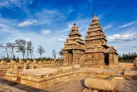

Nestled in the southern part of India, Tamil Nadu is a state renowned for its rich cultural heritage, ancient temples, and scenic landscapes. Here's a glimpse into what makes Tamil Nadu a captivating destination:
Tamil Nadu is home to some of the most revered temples in India, showcasing magnificent architecture and profound spirituality. Explore the iconic Meenakshi Amman Temple in Madurai, dedicated to the goddess Meenakshi and Lord Sundareswarar, adorned with colorful gopurams (towering gateways) and intricate sculptures.
Marvel at the architectural marvel of the Brihadeeswarar Temple in Thanjavur, a UNESCO World Heritage Site and a masterpiece of Dravidian architecture, featuring a towering vimana (temple tower) and ancient stone carvings.
Immerse yourself in the vibrant cultural tapestry of Tamil Nadu, where age-old traditions and customs are celebrated with fervor. Experience the vibrant festivals of the state, including Pongal, the harvest festival, and Tamil New Year, where colorful rituals, music, and dance performances are showcased.
Witness traditional art forms such as Bharatanatyam and Carnatic music, which have deep roots in Tamil Nadu's cultural heritage and continue to enchant audiences around the world.
Explore the scenic landscapes of Tamil Nadu, from lush green hills to pristine beaches along the Bay of Bengal. Visit the hill stations of Ooty and Kodaikanal, nestled amidst rolling hills and verdant tea plantations, offering a serene escape from the hustle and bustle of city life.
Relax on the golden sands of Marina Beach in Chennai, one of the longest urban beaches in the world, and witness the spectacular sunrise or sunset over the tranquil waters of the Bay of Bengal.
Indulge in the delectable cuisine of Tamil Nadu, known for its rich flavors and aromatic spices. Sample traditional dishes such as dosa, idli, sambar, and filter coffee, served with a variety of chutneys and accompaniments.
Experience the warm hospitality of Tamil Nadu's people with a stay in a traditional heritage home or beachside resort, where you can enjoy authentic local cuisine and learn about the customs and traditions of the region.
Whether you're drawn to sacred temples, scenic landscapes, or culinary delights, Tamil Nadu offers a diverse range of experiences for every traveler. Plan your journey to this enchanting state and immerse yourself in the tradition and tranquility of Tamil Nadu. Experience Tamil Nadu – Where Tradition Meets Tranquility!
